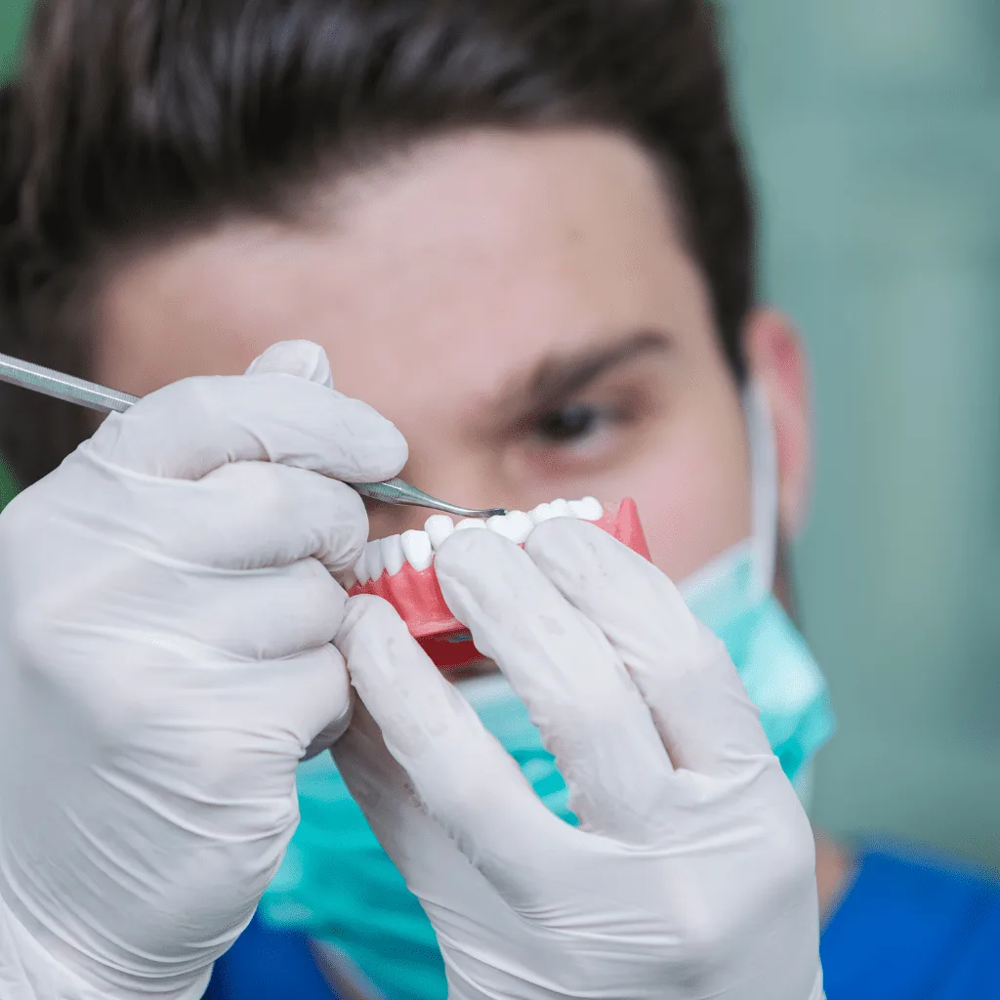
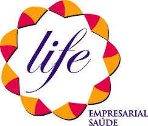
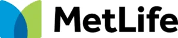
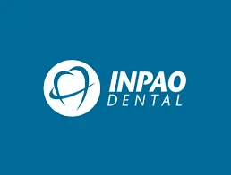
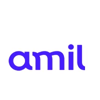

Existem diferentes formatos
Próteses parciais ou totais, pontes e coroas atendem necessidades distintas. Nem toda prótese exige implante.

Mais possibilidades para o seu dia a dia.
Próteses podem substituir dentes ausentes ou recuperar dentes danificados. Há opções fixas e removíveis; a escolha considera os dentes de apoio, a gengiva, a mordida e a rotina de higiene.
Agendar avaliaçãoOpções para repor dentes ausentes. Informações concretas para preparar a sua avaliação.
Próteses parciais ou totais, pontes e coroas atendem necessidades distintas. Nem toda prótese exige implante.
O dentista considera dentes remanescentes, gengiva e possibilidades de apoio para discutir opções fixas ou removíveis.
Próteses removíveis podem exigir adaptação e ajustes ao longo do tempo. A limpeza e o acompanhamento são parte do tratamento.
Qual solução tem apoio adequado para minha boca e como será a higiene diária?
Cada atendimento é individual. A indicação depende de avaliação clínica.
A avaliação considera os dentes ausentes, os dentes de apoio e a mordida.
Tipo, material e formato da prótese são definidos de acordo com o caso.
Adaptação, limpeza e revisões fazem parte do cuidado com a prótese.
A fixa permanece instalada na boca. A removível pode ser retirada para os cuidados de rotina.
O dentista considera a localização dos dentes ausentes ou danificados e a condição geral da boca.
Implantes podem servir de suporte a próteses. Não são soluções necessariamente excludentes.
Soluções fixas ou removíveis para repor ou restaurar dentes.
O tipo de prótese depende das condições bucais e das necessidades da pessoa.
Conhecer o tratamentoEstrutura instalada no osso que pode dar suporte à reposição de dentes.
O dentista avalia as condições do osso e da gengiva antes do planejamento.
Conhecer o tratamentoInformações educativas. Os tratamentos podem se complementar e a indicação depende de avaliação odontológica.
Tire suas dúvidas sobre prótese dentária com a equipe da Maison.
Falar pelo WhatsAppO dentista avalia quantos dentes precisam ser repostos, onde estão e como está a saúde bucal. Entre as opções estão coroas, pontes fixas, próteses parciais removíveis e próteses totais. O material e o formato são definidos de acordo com o tipo de prótese indicado.
As opções incluem coroas, pontes e próteses removíveis, conforme a quantidade de dentes e as condições de apoio. A adaptação e a manutenção fazem parte da reabilitação.
A prótese precisa de higiene e manutenção. Peça orientações de limpeza específicas para o seu modelo e mantenha o acompanhamento com o dentista.
O planejamento é individual. Na consulta, você conhece as opções e os próximos passos.
A avaliação considera os dentes ausentes, os dentes de apoio e a mordida.
Tipo, material e formato da prótese são definidos de acordo com o caso.
Adaptação, limpeza e revisões fazem parte do cuidado com a prótese.
Prefere conversar? A equipe da Maison recebe sua mensagem diretamente.
Falar com a equipeA fixa permanece instalada na boca. A removível pode ser retirada para os cuidados de rotina.
O dentista considera a localização dos dentes ausentes ou danificados e a condição geral da boca.
Atendimento pelos planos Life Empresarial Saúde, MetLife, INPAO Dental, Rede Odonto Empresas e Amil.
Consultar meu plano



Agende sua consulta na Asa Sul. A equipe da Maison está pronta para receber você.